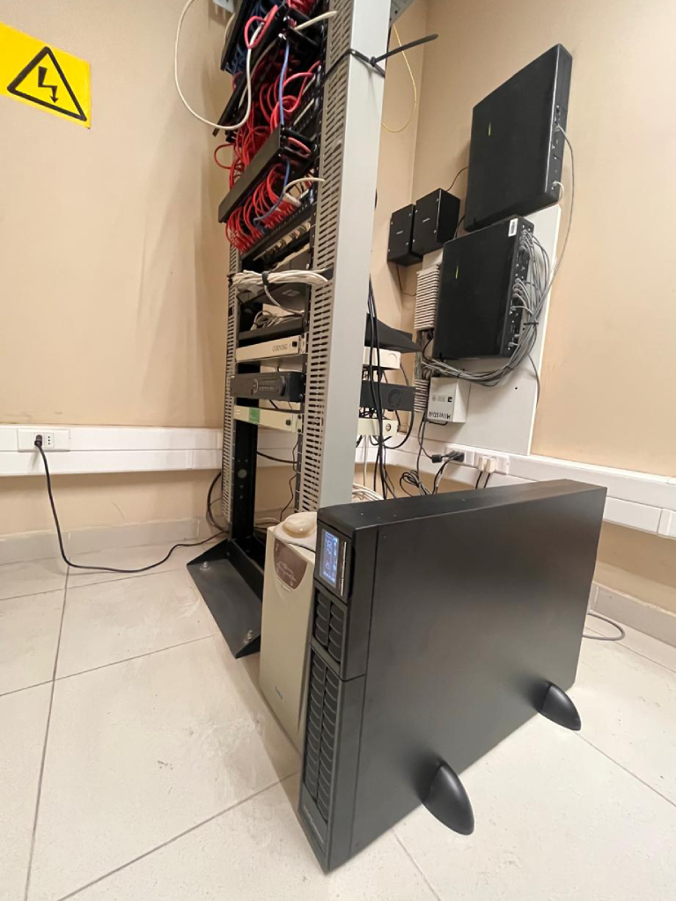
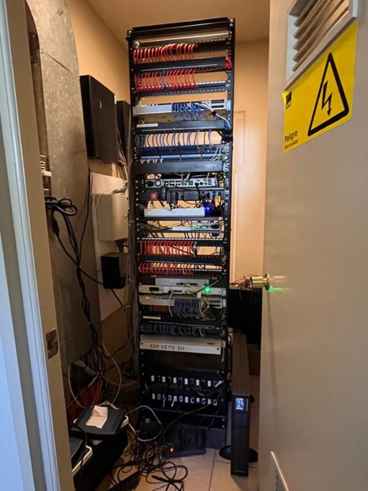

- 12-03-2025
- Informática
- Corporación Administrativa
Vallenar, 12 de marzo de 2025 – Con el objetivo de garantizar la continuidad operativa de los tribunales y proteger los equipos críticos en las salas de comunicaciones, los informáticos de la Corporación Administrativa del Poder Judicial realizaron la instalación de una Unidad de Potencia Ininterrumpida (UPS) de 3.000VA y 2.700 Watts en el 1° Juzgado de Letras de Vallenar.
Esta implementación permite asegurar el suministro energético en caso de cortes de electricidad, protegiendo la infraestructura tecnológica del tribunal y evitando interrupciones en los servicios judiciales.
El despliegue de estos sistemas de respaldo energético ha sido una prioridad para la Corporación Administrativa del Poder Judicial, motivo por el cual esta misma instalación se ha llevado a cabo en diversas dependencias de la región, incluyendo:
- Ilustrísima Corte de Apelaciones de Copiapó
- Tribunal de Letras de Diego de Almagro
- Tribunal de Letras y Garantía de Chañaral
- 1° y 2° Juzgado de Letras de Vallenar
- 1°, 2°, 3° y 4° Juzgado de Letras de Copiapó
- Tribunal de Letras y Garantía de Freirina
- Corporación Administrativa del Poder Judicial Zonal Copiapó
"La instalación de estos equipos es fundamental para garantizar la estabilidad operativa de los sistemas informáticos y la protección de los servidores y dispositivos esenciales en cada tribunal," señalaron los técnicos a cargo de la implementación.
Con esta serie de mejoras tecnológicas, el Poder Judicial refuerza su compromiso con la modernización de la infraestructura digital y la seguridad de los sistemas informáticos, asegurando que el servicio judicial continúe operando sin interrupciones ante posibles contingencias eléctricas.
 